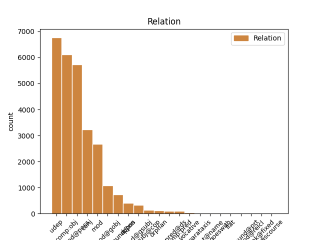
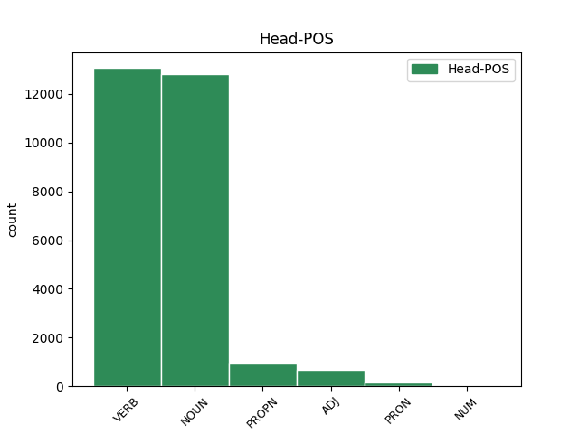
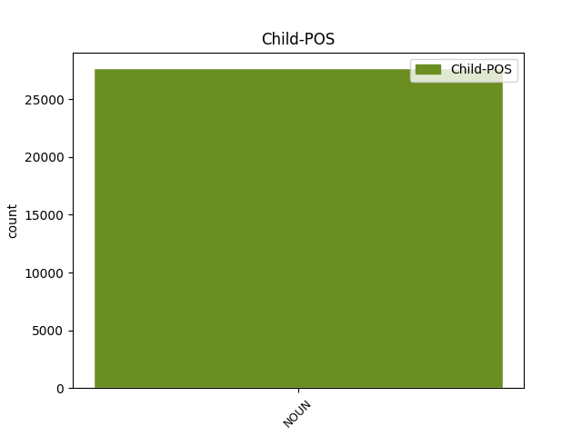

Distribution of features within this leaf



Agreement Rules sorted by frequency.
- When the dependent token is the underspecified dependency(udep) of the head token, and the head token is VERB and the dependent token is NOUN.
1 Kahdeksassa _ _ _ _ 0 _ _ _
2 maakunnassa maa#kunta NOUN N Case=Ine|Number=Sing 5 udep _ _
3 puolestaan _ _ _ _ 0 _ _ _
4 väki _ _ _ _ 0 _ _ _
5 väheni vähetä VERB V Mood=Ind|Number=Sing|Person=3|Tense=Past|VerbForm=Fin|Voice=Act 0 _ _ _
6 ja _ _ _ _ 0 _ _ _
7 eniten _ _ _ _ 0 _ _ _
8 menettäneitä _ _ _ _ 0 _ _ _
9 maakuntia _ _ _ _ 0 _ _ _
10 olivat _ _ _ _ 0 _ _ _
11 Etelä-Savo _ _ _ _ 0 _ _ _
12 ja _ _ _ _ 0 _ _ _
13 Satakunta _ _ _ _ 0 _ _ _
14 . _ _ _ _ 0 _ _ _
1 Säätiö _ _ _ _ 0 _ _ _
2 oli _ _ _ _ 0 _ _ _
3 kuitenkin _ _ _ _ 0 _ _ _
4 jo _ _ _ _ 0 _ _ _
5 ennen _ _ _ _ 0 _ _ _
6 tapauksen _ _ _ _ 0 _ _ _
7 tultua _ _ _ _ 0 _ _ _
8 julkisuuteen _ _ _ _ 0 _ _ _
9 ottanut ottaa VERB V Case=Nom|Degree=Pos|Number=Sing|PartForm=Past|VerbForm=Part|Voice=Act 0 _ _ _
10 käytännöksi _ _ _ _ 0 _ _ _
11 työnhaun _ _ _ _ 0 _ _ _
12 yhteydessä _ _ _ _ 0 _ _ _
13 tapahtuvan _ _ _ _ 0 _ _ _
14 työnhakijoiden _ _ _ _ 0 _ _ _
15 taustan _ _ _ _ 0 _ _ _
16 tarkistamisen tarkistaminen NOUN N Case=Gen|Derivation=Minen|Number=Sing 9 comp:obj _ SpaceAfter=No
17 . _ _ _ _ 0 _ _ _
1 Väkivaltaa _ _ _ _ 0 _ _ _
2 puolueiden puolue NOUN N Case=Gen|Number=Plur 3 mod@poss _ _
3 edustajia edustaja NOUN N Case=Par|Derivation=Ja|Number=Plur 0 _ _ _
4 kohtaan _ _ _ _ 0 _ _ _
5 Ruotsissa _ _ _ _ 0 _ _ _
1 Epilepsiakohtauksen _ _ _ _ 0 _ _ _
2 kaltaisen _ _ _ _ 0 _ _ _
3 häiriön _ _ _ _ 0 _ _ _
4 syyksi _ _ _ _ 0 _ _ _
5 katsottiin _ _ _ _ 0 _ _ _
6 sairaalassa _ _ _ _ 0 _ _ _
7 unen _ _ _ _ 0 _ _ _
8 ja _ _ _ _ 0 _ _ _
9 ravinnon _ _ _ _ 0 _ _ _
10 puute puute NOUN N Case=Nom|Number=Sing 0 _ _ _
11 sekä _ _ _ _ 0 _ _ _
12 liian _ _ _ _ 0 _ _ _
13 pitkäkestoinen _ _ _ _ 0 _ _ _
14 peliin _ _ _ _ 0 _ _ _
15 keskittyminen keskittyminen NOUN N Case=Nom|Derivation=Minen|Number=Sing 10 conj _ SpaceAfter=No
16 . _ _ _ _ 0 _ _ _
1 Doran _ _ _ _ 0 _ _ _
2 erosi _ _ _ _ 0 _ _ _
3 asemastaan asema NOUN N Case=Ela|Number=Sing|Person[psor]=3 0 _ _ _
4 Wikimedia-säätiön _ _ _ _ 0 _ _ _
5 johdossa johto NOUN N Case=Ine|Number=Sing 3 mod _ _
6 tämän _ _ _ _ 0 _ _ _
7 jälkeen _ _ _ _ 0 _ _ _
8 . _ _ _ _ 0 _ _ _
1 Säätiö _ _ _ _ 0 _ _ _
2 oli _ _ _ _ 0 _ _ _
3 kuitenkin _ _ _ _ 0 _ _ _
4 jo _ _ _ _ 0 _ _ _
5 ennen _ _ _ _ 0 _ _ _
6 tapauksen _ _ _ _ 0 _ _ _
7 tultua _ _ _ _ 0 _ _ _
8 julkisuuteen _ _ _ _ 0 _ _ _
9 ottanut _ _ _ _ 0 _ _ _
10 käytännöksi _ _ _ _ 0 _ _ _
11 työnhaun _ _ _ _ 0 _ _ _
12 yhteydessä _ _ _ _ 0 _ _ _
13 tapahtuvan _ _ _ _ 0 _ _ _
14 työnhakijoiden _ _ _ _ 0 _ _ _
15 taustan tausta NOUN N Case=Gen|Number=Sing 16 mod@gobj _ _
16 tarkistamisen tarkistaminen NOUN N Case=Gen|Derivation=Minen|Number=Sing 0 _ _ _
17 . _ _ _ _ 0 _ _ _
1 Ruotsissa _ _ _ _ 0 _ _ _
2 äärivasemmistolaiset _ _ _ _ 0 _ _ _
3 ovat _ _ _ _ 0 _ _ _
4 suojelupoliisi suojelu#poliisi NOUN N Case=Nom|Number=Sing 5 compound@nn _ _
5 Säpon Säpo PROPN N Case=Gen|Number=Sing 0 _ _ _
6 mukaan _ _ _ _ 0 _ _ _
7 käyttäneet _ _ _ _ 0 _ _ _
8 väkivaltaa _ _ _ _ 0 _ _ _
9 demokratiaa _ _ _ _ 0 _ _ _
10 vastaan _ _ _ _ 0 _ _ _
11 Europarlamenttivaalien _ _ _ _ 0 _ _ _
12 alla _ _ _ _ 0 _ _ _
13 . _ _ _ _ 0 _ _ _
1 * _ _ _ _ 0 _ _ _
2 16. _ _ _ _ 0 _ _ _
3 kesäkuuta _ _ _ _ 0 _ _ _
4 2009 _ _ _ _ 0 _ _ _
5 : _ _ _ _ 0 _ _ _
6 Uusi _ _ _ _ 0 _ _ _
7 paljastus paljastus NOUN N Case=Nom|Number=Sing 0 _ _ _
8 : _ _ _ _ 0 _ _ _
9 Nova _ _ _ _ 0 _ _ _
10 Groupin _ _ _ _ 0 _ _ _
11 vaalituki vaali#tuki NOUN N Case=Nom|Number=Sing 7 appos _ _
12 keskustalle _ _ _ _ 0 _ _ _
13 2007 _ _ _ _ 0 _ _ _
1 Wikimedia-säätiön Wikimedia#säätiö NOUN N Case=Gen|Number=Sing 3 mod@gsubj _ _
2 käytännön _ _ _ _ 0 _ _ _
3 toimintaa toiminta NOUN N Case=Par|Number=Sing 0 _ _ _
4 johti _ _ _ _ 0 _ _ _
5 puolen _ _ _ _ 0 _ _ _
6 vuoden _ _ _ _ 0 _ _ _
7 ajan _ _ _ _ 0 _ _ _
8 muun _ _ _ _ 0 _ _ _
9 muassa _ _ _ _ 0 _ _ _
10 shekki- _ _ _ _ 0 _ _ _
11 ja _ _ _ _ 0 _ _ _
12 luottokorttipetoksista _ _ _ _ 0 _ _ _
13 tuomittu _ _ _ _ 0 _ _ _
14 Carolyn _ _ _ _ 0 _ _ _
15 Doran _ _ _ _ 0 _ _ _
16 . _ _ _ _ 0 _ _ _
1 Poika _ _ _ _ 0 _ _ _
2 oli _ _ _ _ 0 _ _ _
3 pelannut _ _ _ _ 0 _ _ _
4 viime _ _ _ _ 0 _ _ _
5 lauantaina _ _ _ _ 0 _ _ _
6 ystävineen _ _ _ _ 0 _ _ _
7 läpi _ _ _ _ 0 _ _ _
8 yön _ _ _ _ 0 _ _ _
9 uutta _ _ _ _ 0 _ _ _
10 Wrath _ _ _ _ 0 _ _ _
11 of _ _ _ _ 0 _ _ _
12 the _ _ _ _ 0 _ _ _
13 Lich _ _ _ _ 0 _ _ _
14 King _ _ _ _ 0 _ _ _
15 -lisäosaa _ _ _ _ 0 _ _ _
16 , _ _ _ _ 0 _ _ _
17 joka _ _ _ _ 0 _ _ _
18 on _ _ _ _ 0 _ _ _
19 Svenska _ _ _ _ 0 _ _ _
20 Dagbladetin _ _ _ _ 0 _ _ _
21 mukaan _ _ _ _ 0 _ _ _
22 ollut _ _ _ _ 0 _ _ _
23 huolenaihe _ _ _ _ 0 _ _ _
24 muidenkin _ _ _ _ 0 _ _ _
25 pelaajien pelaaja NOUN N Case=Gen|Derivation=Ja|Number=Plur 26 mod@poss _ _
26 vanhemmille vanhempi ADJ A Case=All|Degree=Pos|Number=Plur 0 _ _ _
27 . _ _ _ _ 0 _ _ _
1 Suomen _ _ _ _ 0 _ _ _
2 väliluvun _ _ _ _ 0 _ _ _
3 kasvu _ _ _ _ 0 _ _ _
4 oli _ _ _ _ 0 _ _ _
5 suurinta suuri ADJ A Case=Par|Degree=Sup|Number=Sing 0 _ _ _
6 15 _ _ _ _ 0 _ _ _
7 vuoteen vuosi NOUN N Case=Ill|Number=Sing 5 mod _ _
8 ja _ _ _ _ 0 _ _ _
9 vuoden _ _ _ _ 0 _ _ _
10 lopulla _ _ _ _ 0 _ _ _
11 väkiluku _ _ _ _ 0 _ _ _
12 yltää _ _ _ _ 0 _ _ _
13 5,5 _ _ _ _ 0 _ _ _
14 miljoonaan _ _ _ _ 0 _ _ _
15 , _ _ _ _ 0 _ _ _
16 arvioi _ _ _ _ 0 _ _ _
17 Tilastokeskus _ _ _ _ 0 _ _ _
18 . _ _ _ _ 0 _ _ _
1 Mieslaulajista _ _ _ _ 0 _ _ _
2 loppukisassa _ _ _ _ 0 _ _ _
3 ovat _ _ _ _ 0 _ _ _
4 basso _ _ _ _ 0 _ _ _
5 Timo _ _ _ _ 0 _ _ _
6 Riihonen _ _ _ _ 0 _ _ _
7 , _ _ _ _ 0 _ _ _
8 baritoni baritoni NOUN N Case=Nom|Number=Sing 9 compound@nn _ _
9 Jussi Jussi NOUN N Case=Nom|Number=Sing 0 _ _ _
10 Ziegler _ _ _ _ 0 _ _ _
11 sekä _ _ _ _ 0 _ _ _
12 tenori _ _ _ _ 0 _ _ _
13 Olli _ _ _ _ 0 _ _ _
14 Brummer _ _ _ _ 0 _ _ _
15 . _ _ _ _ 0 _ _ _
1 Kuitenkin _ _ _ _ 0 _ _ _
2 japanilaiset _ _ _ _ 0 _ _ _
3 autonvalmistajat _ _ _ _ 0 _ _ _
4 ovat _ _ _ _ 0 _ _ _
5 laajentaneen _ _ _ _ 0 _ _ _
6 toimintaansa _ _ _ _ 0 _ _ _
7 voimakkaasti _ _ _ _ 0 _ _ _
8 kaikkialle _ _ _ _ 0 _ _ _
9 maailmaa _ _ _ _ 0 _ _ _
10 ja _ _ _ _ 0 _ _ _
11 Japani _ _ _ _ 0 _ _ _
12 valmistusmäärien _ _ _ _ 0 _ _ _
13 laskusta _ _ _ _ 0 _ _ _
14 huolimatta _ _ _ _ 0 _ _ _
15 Toyota-yhtymä _ _ _ _ 0 _ _ _
16 , _ _ _ _ 0 _ _ _
17 johon _ _ _ _ 0 _ _ _
18 kuulu _ _ _ _ 0 _ _ _
19 ovat _ _ _ _ 0 _ _ _
20 myös _ _ _ _ 0 _ _ _
21 Hino _ _ _ _ 0 _ _ _
22 ja _ _ _ _ 0 _ _ _
23 Daihatsu _ _ _ _ 0 _ _ _
24 , _ _ _ _ 0 _ _ _
25 on _ _ _ _ 0 _ _ _
26 kohonnut kohota VERB V Case=Nom|Degree=Pos|Number=Sing|PartForm=Past|VerbForm=Part|Voice=Act 0 _ _ _
27 maailman _ _ _ _ 0 _ _ _
28 suurimmaksi _ _ _ _ 0 _ _ _
29 ajoneuvojen _ _ _ _ 0 _ _ _
30 valmistajaksi valmistaja NOUN N Case=Tra|Derivation=Ja|Number=Sing 26 comp:pred _ _
31 ohitse _ _ _ _ 0 _ _ _
32 amerikkalaisen _ _ _ _ 0 _ _ _
33 General _ _ _ _ 0 _ _ _
34 Motorsin _ _ _ _ 0 _ _ _
35 . _ _ _ _ 0 _ _ _
1 Säätiö _ _ _ _ 0 _ _ _
2 oli _ _ _ _ 0 _ _ _
3 kuitenkin _ _ _ _ 0 _ _ _
4 jo _ _ _ _ 0 _ _ _
5 ennen _ _ _ _ 0 _ _ _
6 tapauksen _ _ _ _ 0 _ _ _
7 tultua _ _ _ _ 0 _ _ _
8 julkisuuteen _ _ _ _ 0 _ _ _
9 ottanut ottaa VERB V Case=Nom|Degree=Pos|Number=Sing|PartForm=Past|VerbForm=Part|Voice=Act 0 _ _ _
10 käytännöksi käytäntö NOUN N Case=Tra|Number=Sing 9 comp:pred@ds _ _
11 työnhaun _ _ _ _ 0 _ _ _
12 yhteydessä _ _ _ _ 0 _ _ _
13 tapahtuvan _ _ _ _ 0 _ _ _
14 työnhakijoiden _ _ _ _ 0 _ _ _
15 taustan _ _ _ _ 0 _ _ _
16 tarkistamisen _ _ _ _ 0 _ _ _
17 . _ _ _ _ 0 _ _ _
1 * _ _ _ _ 0 _ _ _
2 Edelfeltin _ _ _ _ 0 _ _ _
3 maalauksen _ _ _ _ 0 _ _ _
4 hinnaksi hinta NOUN N Case=Tra|Number=Sing 6 orphan _ _
5 413 000 _ _ _ _ 0 _ _ _
6 euroa euro NOUN N Case=Par|Number=Sing 0 _ _ _
7 . _ _ _ _ 0 _ _ _
1 Väkiluku _ _ _ _ 0 _ _ _
2 kasvoi _ _ _ _ 0 _ _ _
3 eniten _ _ _ _ 0 _ _ _
4 Uudellamaalla _ _ _ _ 0 _ _ _
5 , _ _ _ _ 0 _ _ _
6 Pirkanmaalla _ _ _ _ 0 _ _ _
7 ja _ _ _ _ 0 _ _ _
8 Pohjois-Pohjanmaalla Pohjois-Pohjanmaa PROPN N Case=Ade|Number=Sing 0 _ _ _
9 sekä _ _ _ _ 0 _ _ _
10 kahdeksassa _ _ _ _ 0 _ _ _
11 muussa _ _ _ _ 0 _ _ _
12 maakunnassa maa#kunta NOUN N Case=Ine|Number=Sing 8 conj _ _
13 ja _ _ _ _ 0 _ _ _
14 Ahvenanmaalla _ _ _ _ 0 _ _ _
15 , _ _ _ _ 0 _ _ _
16 joskin _ _ _ _ 0 _ _ _
17 niissä _ _ _ _ 0 _ _ _
18 vähemmän _ _ _ _ 0 _ _ _
19 kuin _ _ _ _ 0 _ _ _
20 kolmessa _ _ _ _ 0 _ _ _
21 edellämainitussa _ _ _ _ 0 _ _ _
22 . _ _ _ _ 0 _ _ _
1 Norjassa Norja PROPN N Case=Ine|Number=Sing 0 _ _ _
2 Ruijan _ _ _ _ 0 _ _ _
3 puolella puoli NOUN N Case=Ade|Number=Sing 1 mod _ _
4 sekä _ _ _ _ 0 _ _ _
5 ylimmässä _ _ _ _ 0 _ _ _
6 Lapissa _ _ _ _ 0 _ _ _
7 on _ _ _ _ 0 _ _ _
8 alueita _ _ _ _ 0 _ _ _
9 , _ _ _ _ 0 _ _ _
10 joilta _ _ _ _ 0 _ _ _
11 sopulit _ _ _ _ 0 _ _ _
12 ovat _ _ _ _ 0 _ _ _
13 kadonneet _ _ _ _ 0 _ _ _
14 . _ _ _ _ 0 _ _ _
1 * _ _ _ _ 0 _ _ _
2 9. _ _ _ _ 0 _ _ _
3 huhtikuuta _ _ _ _ 0 _ _ _
4 2009 _ _ _ _ 0 _ _ _
5 : _ _ _ _ 0 _ _ _
6 KHO _ _ _ _ 0 _ _ _
7 : _ _ _ _ 0 _ _ _
8 Sähköisen _ _ _ _ 0 _ _ _
9 äänestyksen _ _ _ _ 0 _ _ _
10 kokeilukuntiin kokeilu#kunta NOUN N Case=Ill|Number=Plur 0 _ _ _
11 uudet _ _ _ _ 0 _ _ _
12 vaalit vaalit NOUN N Case=Nom|Number=Plur 10 subj@cop _ _
1 Paul _ _ _ _ 0 _ _ _
2 oli _ _ _ _ 0 _ _ _
3 koulutukseltaan koulutus NOUN N Case=Abl|Number=Sing|Person[psor]=3 5 udep _ _
4 laivaston _ _ _ _ 0 _ _ _
5 upseeri upseeri NOUN N Case=Nom|Number=Sing 0 _ _ _
6 . _ _ _ _ 0 _ _ _
1 EKP:n _ _ _ _ 0 _ _ _
2 neuvosto _ _ _ _ 0 _ _ _
3 asetti asettaa VERB V Mood=Ind|Number=Sing|Person=3|Tense=Past|VerbForm=Fin|Voice=Act 0 _ _ _
4 minimitarjouskoron _ _ _ _ 0 _ _ _
5 ( _ _ _ _ 0 _ _ _
6 niin _ _ _ _ 0 _ _ _
7 kutsuttu _ _ _ _ 0 _ _ _
8 ” _ _ _ _ 0 _ _ _
9 EKP:n _ _ _ _ 0 _ _ _
10 ohjauskorko _ _ _ _ 0 _ _ _
11 ” _ _ _ _ 0 _ _ _
12 ) _ _ _ _ 0 _ _ _
13 50 _ _ _ _ 0 _ _ _
14 peruspistettä _ _ _ _ 0 _ _ _
15 alemmas _ _ _ _ 0 _ _ _
16 3,25 _ _ _ _ 0 _ _ _
17 prosenttiin _ _ _ _ 0 _ _ _
18 , _ _ _ _ 0 _ _ _
19 maksuvalmiusluoton _ _ _ _ 0 _ _ _
20 koron korko NOUN N Case=Gen|Number=Sing 3 conj _ _
21 niin _ _ _ _ 0 _ _ _
22 ikään _ _ _ _ 0 _ _ _
23 50 _ _ _ _ 0 _ _ _
24 pistettä _ _ _ _ 0 _ _ _
25 alemmas _ _ _ _ 0 _ _ _
26 3,75 _ _ _ _ 0 _ _ _
27 prosenttiin _ _ _ _ 0 _ _ _
28 ja _ _ _ _ 0 _ _ _
29 talletuskoron _ _ _ _ 0 _ _ _
30 50 _ _ _ _ 0 _ _ _
31 pistettä _ _ _ _ 0 _ _ _
32 alemmas _ _ _ _ 0 _ _ _
33 2,75 _ _ _ _ 0 _ _ _
34 prosenttiin _ _ _ _ 0 _ _ _
35 . _ _ _ _ 0 _ _ _
1 Large Large PROPN N Case=Nom|Number=Sing 0 _ _ _
2 Hadron _ _ _ _ 0 _ _ _
3 Collider _ _ _ _ 0 _ _ _
4 eli _ _ _ _ 0 _ _ _
5 LHC-hiukkaskiihdytin _ _ _ _ 0 _ _ _
6 ( _ _ _ _ 0 _ _ _
7 suom. _ _ _ _ 0 _ _ _
8 suuri _ _ _ _ 0 _ _ _
9 hadronitörmäytin hadroni#törmäytin NOUN N Case=Nom|Number=Sing 1 appos _ SpaceAfter=No
10 ) _ _ _ _ 0 _ _ _
11 käynnistetään _ _ _ _ 0 _ _ _
12 10. _ _ _ _ 0 _ _ _
13 syyskuuta _ _ _ _ 0 _ _ _
14 2008 _ _ _ _ 0 _ _ _
15 Sveitsin _ _ _ _ 0 _ _ _
16 ja _ _ _ _ 0 _ _ _
17 Ranskan _ _ _ _ 0 _ _ _
18 rajalla _ _ _ _ 0 _ _ _
19 sijaitsevassa _ _ _ _ 0 _ _ _
20 Euroopan _ _ _ _ 0 _ _ _
21 hiukkasfysiikan _ _ _ _ 0 _ _ _
22 tutkimuskeskus _ _ _ _ 0 _ _ _
23 CERNissä _ _ _ _ 0 _ _ _
24 . _ _ _ _ 0 _ _ _
1 Rakas _ _ _ _ 0 _ _ _
2 ystävä ystävä NOUN N Case=Nom|Number=Sing 6 vocative _ SpaceAfter=No
3 , _ _ _ _ 0 _ _ _
4 miksi _ _ _ _ 0 _ _ _
5 sinä _ _ _ _ 0 _ _ _
6 teit tehdä VERB V Mood=Ind|Number=Sing|Person=2|Tense=Past|VerbForm=Fin|Voice=Act 0 _ _ _
7 näin _ _ _ _ 0 _ _ _
8 , _ _ _ _ 0 _ _ _
9 minähän _ _ _ _ 0 _ _ _
10 rakastan _ _ _ _ 0 _ _ _
11 sinua _ _ _ _ 0 _ _ _
12 enemmän _ _ _ _ 0 _ _ _
13 kuin _ _ _ _ 0 _ _ _
14 elämää _ _ _ _ 0 _ _ _
15 , _ _ _ _ 0 _ _ _
16 kyllä _ _ _ _ 0 _ _ _
17 me _ _ _ _ 0 _ _ _
18 yhdessä _ _ _ _ 0 _ _ _
19 selvitään _ _ _ _ 0 _ _ _
20 , _ _ _ _ 0 _ _ _
21 oli _ _ _ _ 0 _ _ _
22 mikä _ _ _ _ 0 _ _ _
23 oli _ _ _ _ 0 _ _ _
24 . _ _ _ _ 0 _ _ _
1 Kansanedustaja _ _ _ _ 0 _ _ _
2 Mika _ _ _ _ 0 _ _ _
3 Lintilän _ _ _ _ 0 _ _ _
4 johtama _ _ _ _ 0 _ _ _
5 työryhmä _ _ _ _ 0 _ _ _
6 perustelee _ _ _ _ 0 _ _ _
7 kaikkien _ _ _ _ 0 _ _ _
8 kotitalouksien _ _ _ _ 0 _ _ _
9 maksamaa _ _ _ _ 0 _ _ _
10 maksua _ _ _ _ 0 _ _ _
11 sillä _ _ _ _ 0 _ _ _
12 , _ _ _ _ 0 _ _ _
13 että _ _ _ _ 0 _ _ _
14 YLEn _ _ _ _ 0 _ _ _
15 palvelut _ _ _ _ 0 _ _ _
16 tavoittavat _ _ _ _ 0 _ _ _
17 käytännössä käytäntö NOUN N Case=Ine|Number=Sing 18 mod _ _
18 kaikki kaikki PRON Pron Case=Nom|Number=Sing|PronType=Ind 0 _ _ _
19 suomalaiset _ _ _ _ 0 _ _ _
20 . _ _ _ _ 0 _ _ _
1 Seminaarilippujen _ _ _ _ 0 _ _ _
2 ostaminen _ _ _ _ 0 _ _ _
3 on _ _ _ _ 0 _ _ _
4 puolestaan _ _ _ _ 0 _ _ _
5 hänen _ _ _ _ 0 _ _ _
6 mielestään mieli NOUN N Case=Ela|Number=Sing|Person[psor]=3 7 udep _ _
7 hyväksyttävää hyväksyttävä ADJ A Case=Par|Degree=Pos|Number=Sing 0 _ _ _
8 koska _ _ _ _ 0 _ _ _
9 lippujen _ _ _ _ 0 _ _ _
10 myyjät _ _ _ _ 0 _ _ _
11 jakavat _ _ _ _ 0 _ _ _
12 liiton _ _ _ _ 0 _ _ _
13 päihdetavoitteet _ _ _ _ 0 _ _ _
14 . _ _ _ _ 0 _ _ _
1 1,3 _ _ _ _ 0 _ _ _
2 miljoonan _ _ _ _ 0 _ _ _
3 asukkaan asukas NOUN N Case=Gen|Number=Sing 4 mod@poss _ _
4 Virossa Viro PROPN N Case=Ine|Number=Sing 0 _ _ _
5 on _ _ _ _ 0 _ _ _
6 nyt _ _ _ _ 0 _ _ _
7 102 000 _ _ _ _ 0 _ _ _
8 työtöntä _ _ _ _ 0 _ _ _
9 , _ _ _ _ 0 _ _ _
10 kertoo _ _ _ _ 0 _ _ _
11 maan _ _ _ _ 0 _ _ _
12 tilastokeskus _ _ _ _ 0 _ _ _
13 . _ _ _ _ 0 _ _ _
1 * _ _ _ _ 0 _ _ _
2 22. _ _ _ _ 0 _ _ _
3 elokuuta _ _ _ _ 0 _ _ _
4 2009 _ _ _ _ 0 _ _ _
5 : _ _ _ _ 0 _ _ _
6 Aliupseeriliitto _ _ _ _ 0 _ _ _
7 yllättyi _ _ _ _ 0 _ _ _
8 Julkisten julkinen ADJ A Case=Gen|Degree=Pos|Derivation=Inen|Number=Plur 0 _ _ _
9 ja _ _ _ _ 0 _ _ _
10 hyvinvointialojen hyvin#vointi#ala NOUN N Case=Gen|Number=Plur 8 conj _ _
11 liiton _ _ _ _ 0 _ _ _
12 suurtuesta _ _ _ _ 0 _ _ _
13 SDP:lle _ _ _ _ 0 _ _ _
1 Suomen _ _ _ _ 0 _ _ _
2 väkiluvun _ _ _ _ 0 _ _ _
3 kasvu kasvu NOUN N Case=Nom|Derivation=U|Number=Sing 4 subj@cop _ _
4 suurinta suuri ADJ A Case=Par|Degree=Sup|Number=Sing 0 _ _ _
5 15 _ _ _ _ 0 _ _ _
6 vuoteen _ _ _ _ 0 _ _ _
1 * _ _ _ _ 0 _ _ _
2 26. _ _ _ _ 0 _ _ _
3 toukokuuta _ _ _ _ 0 _ _ _
4 2009 _ _ _ _ 0 _ _ _
5 : _ _ _ _ 0 _ _ _
6 Mitro Mitro PROPN N Case=Nom|Number=Sing 0 _ _ _
7 Repo _ _ _ _ 0 _ _ _
8 toimituskieltoon toimitus#kielto NOUN N Case=Ill|Number=Sing 6 orphan _ _
1 Tähän _ _ _ _ 0 _ _ _
2 on _ _ _ _ 0 _ _ _
3 olemassa _ _ _ _ 0 _ _ _
4 oma _ _ _ _ 0 _ _ _
5 hyvä _ _ _ _ 0 _ _ _
6 syynsäkin _ _ _ _ 0 _ _ _
7 kuten _ _ _ _ 0 _ _ _
8 Aamulehden _ _ _ _ 0 _ _ _
9 toimittaja _ _ _ _ 0 _ _ _
10 Riitta-Liisa _ _ _ _ 0 _ _ _
11 Pirttikoski _ _ _ _ 0 _ _ _
12 toteaa _ _ _ _ 0 _ _ _
13 : _ _ _ _ 0 _ _ _
14 " _ _ _ _ 0 _ _ _
15 Ja _ _ _ _ 0 _ _ _
16 miksi _ _ _ _ 0 _ _ _
17 , _ _ _ _ 0 _ _ _
18 sillä _ _ _ _ 0 _ _ _
19 paras _ _ _ _ 0 _ _ _
20 on _ _ _ _ 0 _ _ _
21 sama sama PRON Pron Case=Nom|Number=Sing|PronType=Ind 0 _ _ _
22 : _ _ _ _ 0 _ _ _
23 omintakeinen _ _ _ _ 0 _ _ _
24 itsellisyys itsellisyys NOUN N Case=Nom|Number=Sing 21 appos _ SpaceAfter=No
25 , _ _ _ _ 0 _ _ _
26 jonka _ _ _ _ 0 _ _ _
27 avulla _ _ _ _ 0 _ _ _
28 seistään _ _ _ _ 0 _ _ _
29 pystyssä _ _ _ _ 0 _ _ _
30 , _ _ _ _ 0 _ _ _
31 toi _ _ _ _ 0 _ _ _
32 tuleva _ _ _ _ 0 _ _ _
33 mitä _ _ _ _ 0 _ _ _
34 tahansa _ _ _ _ 0 _ _ _
35 " _ _ _ _ 0 _ _ _
1 Maanantaina maanantai NOUN N Case=Ess|Number=Sing 0 _ _ _
2 7. _ _ _ _ 0 _ _ _
3 tammikuuta tammikuu NOUN N Case=Par|Number=Sing 1 flat _ _
4 2008 _ _ _ _ 0 _ _ _
5 tiedotti _ _ _ _ 0 _ _ _
6 Japanin _ _ _ _ 0 _ _ _
7 autonvalmistajien _ _ _ _ 0 _ _ _
8 yhdistys _ _ _ _ 0 _ _ _
9 ( _ _ _ _ 0 _ _ _
10 JADA _ _ _ _ 0 _ _ _
11 ) _ _ _ _ 0 _ _ _
12 , _ _ _ _ 0 _ _ _
13 että _ _ _ _ 0 _ _ _
14 vuoden _ _ _ _ 0 _ _ _
15 2007 _ _ _ _ 0 _ _ _
16 myynti _ _ _ _ 0 _ _ _
17 on _ _ _ _ 0 _ _ _
18 vähentynyt _ _ _ _ 0 _ _ _
19 7,6 _ _ _ _ 0 _ _ _
20 % _ _ _ _ 0 _ _ _
21 verrattuna _ _ _ _ 0 _ _ _
22 edelliseen _ _ _ _ 0 _ _ _
23 vuoteen _ _ _ _ 0 _ _ _
24 2006 _ _ _ _ 0 _ _ _
25 . _ _ _ _ 0 _ _ _
1 Vuodesta _ _ _ _ 0 _ _ _
2 2005 _ _ _ _ 0 _ _ _
3 lähtien _ _ _ _ 0 _ _ _
4 yritys _ _ _ _ 0 _ _ _
5 on _ _ _ _ 0 _ _ _
6 valmistanut _ _ _ _ 0 _ _ _
7 myös _ _ _ _ 0 _ _ _
8 tuotteita _ _ _ _ 0 _ _ _
9 omalla _ _ _ _ 0 _ _ _
10 Real Real PROPN N Case=Nom|Number=Sing 0 _ _ _
11 Snacks-merkillä snacks#merkki NOUN N Case=Ade|Number=Sing 10 flat@name _ SpaceAfter=No
12 . _ _ _ _ 0 _ _ _
1 Suositeltaava _ _ _ _ 0 _ _ _
2 on _ _ _ _ 0 _ _ _
3 että _ _ _ _ 0 _ _ _
4 isännöitsijäsi _ _ _ _ 0 _ _ _
5 valikoituisi _ _ _ _ 0 _ _ _
6 jonkin _ _ _ _ 0 _ _ _
7 verran _ _ _ _ 0 _ _ _
8 elämän elämä NOUN N Case=Gen|Number=Sing 0 _ _ _
9 kokemusta kokemus NOUN N Case=Par|Number=Sing 8 goeswith _ _
10 omaavat _ _ _ _ 0 _ _ _
11 henkilöt _ _ _ _ 0 _ _ _
12 . _ _ _ _ 0 _ _ _
1 He _ _ _ _ 0 _ _ _
2 olivat _ _ _ _ 0 _ _ _
3 yksi yksi PRON Pron Case=Nom|Number=Sing|PronType=Ind 0 _ _ _
4 Iranin _ _ _ _ 0 _ _ _
5 seitsemästä _ _ _ _ 0 _ _ _
6 suuresta _ _ _ _ 0 _ _ _
7 suvusta _ _ _ _ 0 _ _ _
8 ja _ _ _ _ 0 _ _ _
9 kaukaista _ _ _ _ 0 _ _ _
10 sukua suku NOUN N Case=Par|Number=Sing 3 conj _ _
11 sassanideille _ _ _ _ 0 _ _ _
12 . _ _ _ _ 0 _ _ _
1 Kaavion kaavio NOUN N Case=Gen|Number=Sing 2 comp:obj _ _
2 ulkopuolelta ulko#puoli NOUN N Case=Abl|Number=Sing 0 _ _ _
3 tuleva _ _ _ _ 0 _ _ _
4 viesti _ _ _ _ 0 _ _ _
5 voidaan _ _ _ _ 0 _ _ _
6 merkitä _ _ _ _ 0 _ _ _
7 lähteväksi _ _ _ _ 0 _ _ _
8 mustatusta _ _ _ _ 0 _ _ _
9 ympyrästä _ _ _ _ 0 _ _ _
10 . _ _ _ _ 0 _ _ _
1 Lomalento _ _ _ _ 0 _ _ _
2 oli _ _ _ _ 0 _ _ _
3 kuuden kuusi NUM Num Case=Gen|Number=Sing|NumType=Card 0 _ _ _
4 jälkeen _ _ _ _ 0 _ _ _
5 illalla ilta NOUN N Case=Ade|Number=Sing 3 mod _ _
6 perillä _ _ _ _ 0 _ _ _
7 Helsingissä _ _ _ _ 0 _ _ _
8 . _ _ _ _ 0 _ _ _
1 * _ _ _ _ 0 _ _ _
2 7. _ _ _ _ 0 _ _ _
3 kesäkuuta _ _ _ _ 0 _ _ _
4 2009 _ _ _ _ 0 _ _ _
5 : _ _ _ _ 0 _ _ _
6 Chávez _ _ _ _ 0 _ _ _
7 sai saada VERB V Mood=Ind|Number=Sing|Person=3|Tense=Past|VerbForm=Fin|Voice=Act 0 _ _ _
8 tahtonsa _ _ _ _ 0 _ _ _
9 läpi _ _ _ _ 0 _ _ _
10 : _ _ _ _ 0 _ _ _
11 Venezuelan _ _ _ _ 0 _ _ _
12 presidentin _ _ _ _ 0 _ _ _
13 valtakausien _ _ _ _ 0 _ _ _
14 määrä määrä NOUN N Case=Nom|Number=Sing 7 parataxis _ _
15 rajattomaksi _ _ _ _ 0 _ _ _
1 Se _ _ _ _ 0 _ _ _
2 on _ _ _ _ 0 _ _ _
3 samanpituinen saman#pituinen ADJ A Case=Nom|Degree=Pos|Derivation=Inen|Number=Sing 0 _ _ _
4 ( _ _ _ _ 0 _ _ _
5 noin _ _ _ _ 0 _ _ _
6 3.5 _ _ _ _ 0 _ _ _
7 m metri NOUN N Case=Par|Number=Sing 3 appos _ SpaceAfter=No
8 ) _ _ _ _ 0 _ _ _
9 kuin _ _ _ _ 0 _ _ _
10 Korealaiset _ _ _ _ 0 _ _ _
11 kaupunkiautot _ _ _ _ 0 _ _ _
12 kuten _ _ _ _ 0 _ _ _
13 Hyundai _ _ _ _ 0 _ _ _
14 Atos _ _ _ _ 0 _ _ _
15 ja _ _ _ _ 0 _ _ _
16 Kia _ _ _ _ 0 _ _ _
17 Picanto _ _ _ _ 0 _ _ _
18 . _ _ _ _ 0 _ _ _
1 * _ _ _ _ 0 _ _ _
2 1. _ _ _ _ 0 _ _ _
3 tammikuuta _ _ _ _ 0 _ _ _
4 2010 _ _ _ _ 0 _ _ _
5 : _ _ _ _ 0 _ _ _
6 Suomessa Suomi PROPN N Case=Ine|Number=Sing 0 _ _ _
7 neljä _ _ _ _ 0 _ _ _
8 kuntaliitosta kunta#liitos NOUN N Case=Par|Number=Sing 6 subj@cop _ _
1 Näitä _ _ _ _ 0 _ _ _
2 laitteita _ _ _ _ 0 _ _ _
3 oli _ _ _ _ 0 _ _ _
4 Suomessa _ _ _ _ 0 _ _ _
5 neljä _ _ _ _ 0 _ _ _
6 , _ _ _ _ 0 _ _ _
7 kaikki _ _ _ _ 0 _ _ _
8 sotasaalisveneissä sota#saalis#vene NOUN N Case=Ine|Number=Plur 0 _ _ _
9 : _ _ _ _ 0 _ _ _
10 kolme _ _ _ _ 0 _ _ _
11 Viima-luokan _ _ _ _ 0 _ _ _
12 veneissä vene NOUN N Case=Ine|Number=Plur 8 parataxis _ _
13 ja _ _ _ _ 0 _ _ _
14 yksi _ _ _ _ 0 _ _ _
15 Vasamassa _ _ _ _ 0 _ _ _
16 . _ _ _ _ 0 _ _ _
1 Albumin _ _ _ _ 0 _ _ _
2 ensimmäinen _ _ _ _ 0 _ _ _
3 single _ _ _ _ 0 _ _ _
4 oli _ _ _ _ 0 _ _ _
5 nimeltään nimi NOUN N Case=Abl|Number=Sing|Person[psor]=3 6 udep _ _
6 Arma-Goddamn-Motherfuckin-Geddon Arma-Goddamn-Motherfuckin-Geddon PROPN N Case=Nom|Number=Sing 0 _ _ _
7 . _ _ _ _ 0 _ _ _
1 EU: _ _ _ _ 0 _ _ _
2 n _ _ _ _ 0 _ _ _
3 historian _ _ _ _ 0 _ _ _
4 ja _ _ _ _ 0 _ _ _
5 EU: EU PROPN N Abbr=Yes|Case=Gen|Number=Sing 0 _ _ _
6 n n NOUN N Case=Gen|Number=Sing|Typo=Yes 5 goeswith _ _
7 kulttuurin _ _ _ _ 0 _ _ _
8 opetusta _ _ _ _ 0 _ _ _
9 otetaan _ _ _ _ 0 _ _ _
10 käyttöön _ _ _ _ 0 _ _ _
11 ennemmin _ _ _ _ 0 _ _ _
12 kuin _ _ _ _ 0 _ _ _
13 eurooppalaisen _ _ _ _ 0 _ _ _
14 historian _ _ _ _ 0 _ _ _
15 ja _ _ _ _ 0 _ _ _
16 eurooppalaisen _ _ _ _ 0 _ _ _
17 kulttuurin _ _ _ _ 0 _ _ _
18 tai _ _ _ _ 0 _ _ _
19 vaikkapa _ _ _ _ 0 _ _ _
20 muiden _ _ _ _ 0 _ _ _
21 maailman _ _ _ _ 0 _ _ _
22 osien _ _ _ _ 0 _ _ _
23 maailmanhistorian _ _ _ _ 0 _ _ _
24 ja _ _ _ _ 0 _ _ _
25 kulttuurien _ _ _ _ 0 _ _ _
26 opetusta _ _ _ _ 0 _ _ _
27 . _ _ _ _ 0 _ _ _
1 ( _ _ _ _ 0 _ _ _
2 8 _ _ _ _ 0 _ _ _
3 ) _ _ _ _ 0 _ _ _
4 vihreän _ _ _ _ 0 _ _ _
5 kirjan _ _ _ _ 0 _ _ _
6 julkaisemista _ _ _ _ 0 _ _ _
7 seurannut _ _ _ _ 0 _ _ _
8 keskustelu _ _ _ _ 0 _ _ _
9 osoitti _ _ _ _ 0 _ _ _
10 muun _ _ _ _ 0 _ _ _
11 muassa _ _ _ _ 0 _ _ _
12 , _ _ _ _ 0 _ _ _
13 että _ _ _ _ 0 _ _ _
14 määriteltäessä _ _ _ _ 0 _ _ _
15 tapaa _ _ _ _ 0 _ _ _
16 , _ _ _ _ 0 _ _ _
17 jolla _ _ _ _ 0 _ _ _
18 81 _ _ _ _ 0 _ _ _
19 artiklan _ _ _ _ 0 _ _ _
20 1 _ _ _ _ 0 _ _ _
21 ja _ _ _ _ 0 _ _ _
22 3 _ _ _ _ 0 _ _ _
23 kohtaa _ _ _ _ 0 _ _ _
24 sovelletaan _ _ _ _ 0 _ _ _
25 , _ _ _ _ 0 _ _ _
26 on olla VERB V Mood=Ind|Number=Sing|Person=0|Tense=Pres|VerbForm=Fin|Voice=Act 0 _ _ _
27 tarpeen tarve NOUN N Case=Gen|Number=Sing 26 compound@prt _ _
28 ottaa _ _ _ _ 0 _ _ _
29 asianmukaisesti _ _ _ _ 0 _ _ _
30 huomioon _ _ _ _ 0 _ _ _
31 vertikaalisten _ _ _ _ 0 _ _ _
32 sopimusten _ _ _ _ 0 _ _ _
33 taloudelliset _ _ _ _ 0 _ _ _
34 vaikutukset _ _ _ _ 0 _ _ _
35 ; _ _ _ _ 0 _ _ _
36 otettaessa _ _ _ _ 0 _ _ _
37 käyttöön _ _ _ _ 0 _ _ _
38 taloudellisia _ _ _ _ 0 _ _ _
39 perusteita _ _ _ _ 0 _ _ _
40 , _ _ _ _ 0 _ _ _
41 joilla _ _ _ _ 0 _ _ _
42 rajataan _ _ _ _ 0 _ _ _
43 ryhmäpoikkeuksen _ _ _ _ 0 _ _ _
44 soveltamisalaa _ _ _ _ 0 _ _ _
45 kyseisistä _ _ _ _ 0 _ _ _
46 sopimuksista _ _ _ _ 0 _ _ _
47 mahdollisesti _ _ _ _ 0 _ _ _
48 aiheutuvien _ _ _ _ 0 _ _ _
49 kilpailun _ _ _ _ 0 _ _ _
50 vastaisten _ _ _ _ 0 _ _ _
51 vaikutusten _ _ _ _ 0 _ _ _
52 perusteella _ _ _ _ 0 _ _ _
53 , _ _ _ _ 0 _ _ _
54 on _ _ _ _ 0 _ _ _
55 otettava _ _ _ _ 0 _ _ _
56 huomioon _ _ _ _ 0 _ _ _
57 kyseisten _ _ _ _ 0 _ _ _
58 yritysten _ _ _ _ 0 _ _ _
59 markkinaosuus _ _ _ _ 0 _ _ _
60 kyseisillä _ _ _ _ 0 _ _ _
61 markkinoilla _ _ _ _ 0 _ _ _
62 , _ _ _ _ 0 _ _ _
1 Turkulainen _ _ _ _ 0 _ _ _
2 yritysjuristi yritys#juristi NOUN N Case=Nom|Number=Sing 3 subj@cop _ _
3 epäiltynä epäillä VERB V Case=Ess|Degree=Pos|Number=Sing|PartForm=Past|VerbForm=Part|Voice=Pass 0 _ _ _
4 kaappauksesta _ _ _ _ 0 _ _ _
1 Tässä tämä PRON Pron Case=Ine|Number=Sing|PronType=Dem 0 _ _ _
2 omahyväinen _ _ _ _ 0 _ _ _
3 läpileikkaus läpi#leikkaus NOUN N Case=Nom|Number=Sing 1 subj@cop _ _
4 kaiken _ _ _ _ 0 _ _ _
5 kaikkiaan _ _ _ _ 0 _ _ _
6 melko _ _ _ _ 0 _ _ _
7 onnistuneesta _ _ _ _ 0 _ _ _
8 yrityksestä _ _ _ _ 0 _ _ _
9 aloittaa _ _ _ _ 0 _ _ _
10 uusi _ _ _ _ 0 _ _ _
11 opiskelijaperinne _ _ _ _ 0 _ _ _
12 , _ _ _ _ 0 _ _ _
13 josta _ _ _ _ 0 _ _ _
14 voitte _ _ _ _ 0 _ _ _
15 todeta _ _ _ _ 0 _ _ _
16 joustavuuden _ _ _ _ 0 _ _ _
17 tarpeen _ _ _ _ 0 _ _ _
18 suunnitelmissa _ _ _ _ 0 _ _ _
19 . _ _ _ _ 0 _ _ _
1 Ratkaisijan _ _ _ _ 0 _ _ _
2 asemaan _ _ _ _ 0 _ _ _
3 ovat _ _ _ _ 0 _ _ _
4 päässeet _ _ _ _ 0 _ _ _
5 niin _ _ _ _ 0 _ _ _
6 äärioikeistolaisen _ _ _ _ 0 _ _ _
7 Le _ _ _ _ 0 _ _ _
8 Front _ _ _ _ 0 _ _ _
9 Nationalin _ _ _ _ 0 _ _ _
10 ( _ _ _ _ 0 _ _ _
11 8,76 _ _ _ _ 0 _ _ _
12 % _ _ _ _ 0 _ _ _
13 ) _ _ _ _ 0 _ _ _
14 ja _ _ _ _ 0 _ _ _
15 keskusta keskusta NOUN N Case=Gen|Number=Sing|Typo=Yes 0 _ _ _
16 MoDem-puolueen MoDem#puolue NOUN N Case=Gen|Number=Sing 15 flat@name _ _
17 ( _ _ _ _ 0 _ _ _
18 5,54 _ _ _ _ 0 _ _ _
19 & _ _ _ _ 0 _ _ _
20 ) _ _ _ _ 0 _ _ _
21 kannattajat _ _ _ _ 0 _ _ _
22 . _ _ _ _ 0 _ _ _
1 – _ _ _ _ 0 _ _ _
2 Kyllähän _ _ _ _ 0 _ _ _
3 se _ _ _ _ 0 _ _ _
4 hyvältä _ _ _ _ 0 _ _ _
5 tuntuu _ _ _ _ 0 _ _ _
6 , _ _ _ _ 0 _ _ _
7 ei _ _ _ _ 0 _ _ _
8 minulla minä PRON Pron Case=Ade|Number=Sing|Person=1|PronType=Prs 0 _ _ _
9 tällaista _ _ _ _ 0 _ _ _
10 putkea _ _ _ _ 0 _ _ _
11 ole _ _ _ _ 0 _ _ _
12 pujottelussa pujottelu NOUN N Case=Ine|Derivation=U|Number=Sing 8 udep _ _
13 ollut _ _ _ _ 0 _ _ _
14 vuosiin _ _ _ _ 0 _ _ _
15 . _ _ _ _ 0 _ _ _
1 Vaikka _ _ _ _ 0 _ _ _
2 orjuus _ _ _ _ 0 _ _ _
3 on _ _ _ _ 0 _ _ _
4 kaikkialla _ _ _ _ 0 _ _ _
5 maailmassa _ _ _ _ 0 _ _ _
6 virallisesti _ _ _ _ 0 _ _ _
7 kielletty _ _ _ _ 0 _ _ _
8 , _ _ _ _ 0 _ _ _
9 on _ _ _ _ 0 _ _ _
10 esitetty _ _ _ _ 0 _ _ _
11 arvio _ _ _ _ 0 _ _ _
12 , _ _ _ _ 0 _ _ _
13 että _ _ _ _ 0 _ _ _
14 orjia _ _ _ _ 0 _ _ _
15 olisi _ _ _ _ 0 _ _ _
16 tällä _ _ _ _ 0 _ _ _
17 hetkellä hetki NOUN N Case=Ade|Number=Sing 22 udep _ _
18 eri _ _ _ _ 0 _ _ _
19 puolilla _ _ _ _ 0 _ _ _
20 maailmaa _ _ _ _ 0 _ _ _
21 27 _ _ _ _ 0 _ _ _
22 miljoonaa miljoona NUM Num Case=Par|Number=Sing|NumType=Card 0 _ _ _
23 . _ _ _ _ 0 _ _ _
1 Tämä _ _ _ _ 0 _ _ _
2 jäi _ _ _ _ 0 _ _ _
3 Neuvostoliiton _ _ _ _ 0 _ _ _
4 sukkulaohjelman sukkula#ohjelma NOUN N Case=Gen|Number=Sing 5 mod@poss _ _
5 ainoaksi ainoa PRON Pron Case=Tra|Number=Sing|PronType=Ind 0 _ _ _
6 toteutuneeksi _ _ _ _ 0 _ _ _
7 avaruuslennoksi _ _ _ _ 0 _ _ _
8 . _ _ _ _ 0 _ _ _
1 * _ _ _ _ 0 _ _ _
2 " _ _ _ _ 0 _ _ _
3 Työväenlehdistön _ _ _ _ 0 _ _ _
4 kannatusyhdistys _ _ _ _ 0 _ _ _
5 ry ry NOUN N Abbr=Yes|Case=Nom|Number=Sing 7 compound@nn _ SpaceAfter=No
6 " _ _ _ _ 0 _ _ _
7 -niminen niminen ADJ A Case=Nom|Degree=Pos|Derivation=Inen|Number=Sing 0 _ _ _
8 yhdistys _ _ _ _ 0 _ _ _
9 ( _ _ _ _ 0 _ _ _
10 100,000 _ _ _ _ 0 _ _ _
11 euroa _ _ _ _ 0 _ _ _
12 ) _ _ _ _ 0 _ _ _
1 Vaihtomiehet _ _ _ _ 0 _ _ _
2 saivat _ _ _ _ 0 _ _ _
3 paljon _ _ _ _ 0 _ _ _
4 peliaikaa _ _ _ _ 0 _ _ _
5 ja _ _ _ _ 0 _ _ _
6 minä minä PRON Pron Case=Nom|Number=Sing|Person=1|PronType=Prs 0 _ _ _
7 tuntumaa tuntuma NOUN N Case=Par|Number=Sing 6 orphan _ _
8 uudesta _ _ _ _ 0 _ _ _
9 roolista _ _ _ _ 0 _ _ _
1 Linnun _ _ _ _ 0 _ _ _
2 pituus _ _ _ _ 0 _ _ _
3 on _ _ _ _ 0 _ _ _
4 noin _ _ _ _ 0 _ _ _
5 26–29 _ _ _ _ 0 _ _ _
6 cm cm NOUN N Abbr=Yes|Case=Par|Number=Sing 0 _ _ _
7 , _ _ _ _ 0 _ _ _
8 josta _ _ _ _ 0 _ _ _
9 pyrstön _ _ _ _ 0 _ _ _
10 pituus _ _ _ _ 0 _ _ _
11 14–15 _ _ _ _ 0 _ _ _
12 cm cm NOUN N Abbr=Yes|Case=Par|Number=Sing 6 mod@relcl _ SpaceAfter=No
13 , _ _ _ _ 0 _ _ _
14 siipien _ _ _ _ 0 _ _ _
15 kärkiväli _ _ _ _ 0 _ _ _
16 31–33,5 _ _ _ _ 0 _ _ _
17 cm _ _ _ _ 0 _ _ _
18 ja _ _ _ _ 0 _ _ _
19 paino _ _ _ _ 0 _ _ _
20 64–83 _ _ _ _ 0 _ _ _
21 g _ _ _ _ 0 _ _ _
22 . _ _ _ _ 0 _ _ _
1 Tapahtuma _ _ _ _ 0 _ _ _
2 on _ _ _ _ 0 _ _ _
3 kerännyt _ _ _ _ 0 _ _ _
4 vuosi vuosi NOUN N Case=Nom|Number=Sing 0 _ _ _
5 vuodelta vuosi NOUN N Case=Abl|Number=Sing 4 unk@fixed _ _
6 enemmän _ _ _ _ 0 _ _ _
7 kävijöitä _ _ _ _ 0 _ _ _
8 – _ _ _ _ 0 _ _ _
9 vuonna _ _ _ _ 0 _ _ _
10 2005 _ _ _ _ 0 _ _ _
11 järjestetyssä _ _ _ _ 0 _ _ _
12 ensimmäisessä _ _ _ _ 0 _ _ _
13 tapahtumassa _ _ _ _ 0 _ _ _
14 kävijöitä _ _ _ _ 0 _ _ _
15 oli _ _ _ _ 0 _ _ _
16 noin _ _ _ _ 0 _ _ _
17 tuhat _ _ _ _ 0 _ _ _
18 , _ _ _ _ 0 _ _ _
19 vuonna _ _ _ _ 0 _ _ _
20 2006 _ _ _ _ 0 _ _ _
21 noin _ _ _ _ 0 _ _ _
22 1 800 _ _ _ _ 0 _ _ _
23 ja _ _ _ _ 0 _ _ _
24 vuonna _ _ _ _ 0 _ _ _
25 2008 _ _ _ _ 0 _ _ _
26 noin _ _ _ _ 0 _ _ _
27 2 800 _ _ _ _ 0 _ _ _
28 . _ _ _ _ 0 _ _ _
1 Raiskaajista _ _ _ _ 0 _ _ _
2 yksi yksi NUM Num Case=Nom|Number=Sing|NumType=Card 0 _ _ _
3 , _ _ _ _ 0 _ _ _
4 17-vuotias _ _ _ _ 0 _ _ _
5 Tottenhamissa _ _ _ _ 0 _ _ _
6 asuva _ _ _ _ 0 _ _ _
7 poika poika NOUN N Case=Nom|Number=Sing 2 appos _ SpaceAfter=No
8 , _ _ _ _ 0 _ _ _
9 on _ _ _ _ 0 _ _ _
10 pidätetty _ _ _ _ 0 _ _ _
11 . _ _ _ _ 0 _ _ _
1 Arvoisa _ _ _ _ 0 _ _ _
2 puhemies puhe#mies NOUN N Case=Nom|Number=Sing 4 vocative _ SpaceAfter=No
3 , _ _ _ _ 0 _ _ _
4 kiitos kiitos NOUN N Case=Nom|Number=Sing 0 _ _ _
5 huomaavaisuudestanne _ _ _ _ 0 _ _ _
6 . _ _ _ _ 0 _ _ _
1 Kun _ _ _ _ 0 _ _ _
2 pääsen _ _ _ _ 0 _ _ _
3 maahan _ _ _ _ 0 _ _ _
4 , _ _ _ _ 0 _ _ _
5 olen _ _ _ _ 0 _ _ _
6 kolmekymmentäkaksi _ _ _ _ 0 _ _ _
7 , _ _ _ _ 0 _ _ _
8 elinaikaa elin#aika NOUN N Case=Par|Number=Sing 9 subj@cop _ _
9 viisikymmentä viisi#kymmenen NUM Num Case=Par|Number=Sing|NumType=Card 0 _ _ _
10 . _ _ _ _ 0 _ _ _
1 Helkkari helkkari NOUN N Case=Nom|Number=Sing 4 discourse _ SpaceAfter=No
2 , _ _ _ _ 0 _ _ _
3 kaikki _ _ _ _ 0 _ _ _
4 epäonnistuu epä#onnistua VERB V Mood=Ind|Number=Sing|Person=3|Tense=Pres|VerbForm=Fin|Voice=Act 0 _ _ _
5 , _ _ _ _ 0 _ _ _
6 jos _ _ _ _ 0 _ _ _
7 sinä _ _ _ _ 0 _ _ _
8 et _ _ _ _ 0 _ _ _
9 nyt _ _ _ _ 0 _ _ _
10 auta _ _ _ _ 0 _ _ _
11 ! _ _ _ _ 0 _ _ _
1 Vanhaa _ _ _ _ 0 _ _ _
2 tietä _ _ _ _ 0 _ _ _
3 on _ _ _ _ 0 _ _ _
4 käyttänyt _ _ _ _ 0 _ _ _
5 päivittäin _ _ _ _ 0 _ _ _
6 noin _ _ _ _ 0 _ _ _
7 9 000 _ _ _ _ 0 _ _ _
8 autoilijaa _ _ _ _ 0 _ _ _
9 , _ _ _ _ 0 _ _ _
10 joista _ _ _ _ 0 _ _ _
11 nyt _ _ _ _ 0 _ _ _
12 6 000: 6000 NUM Num Case=Gen|Number=Sing|NumType=Card 0 _ _ _
13 n n NOUN N Case=Gen|Number=Sing|Typo=Yes 12 goeswith _ _
14 arvellaan _ _ _ _ 0 _ _ _
15 siirtyvän _ _ _ _ 0 _ _ _
16 uuden _ _ _ _ 0 _ _ _
17 ohitustien _ _ _ _ 0 _ _ _
18 käyttäjiksi _ _ _ _ 0 _ _ _
19 . _ _ _ _ 0 _ _ _
1 Myytävänä myydä VERB V Case=Ess|Degree=Pos|Number=Sing|PartForm=Pres|VerbForm=Part|Voice=Pass 0 _ _ _
2 kartanon _ _ _ _ 0 _ _ _
3 huutokaupassa huuto#kauppa NOUN N Case=Ine|Number=Sing 1 mod _ _
4 oli _ _ _ _ 0 _ _ _
5 28 _ _ _ _ 0 _ _ _
6 hevosta _ _ _ _ 0 _ _ _
7 , _ _ _ _ 0 _ _ _
8 joita _ _ _ _ 0 _ _ _
9 ostamaan _ _ _ _ 0 _ _ _
10 tai _ _ _ _ 0 _ _ _
11 huutokauppaa _ _ _ _ 0 _ _ _
12 katsomaan _ _ _ _ 0 _ _ _
13 tuli _ _ _ _ 0 _ _ _
14 kolmisen _ _ _ _ 0 _ _ _
15 sataa _ _ _ _ 0 _ _ _
16 kiinnostunutta _ _ _ _ 0 _ _ _
17 . _ _ _ _ 0 _ _ _
1 Tehostetaan _ _ _ _ 0 _ _ _
2 maahanpääsymenettelyjen _ _ _ _ 0 _ _ _
3 kohteena _ _ _ _ 0 _ _ _
4 olevien _ _ _ _ 0 _ _ _
5 henkilöiden henkilö NOUN N Case=Gen|Number=Plur 6 mod@poss _ _
6 huollettaville huoltaa VERB V Case=All|Degree=Pos|Number=Plur|PartForm=Pres|VerbForm=Part|Voice=Pass 0 _ _ _
7 sekä _ _ _ _ 0 _ _ _
8 naisille _ _ _ _ 0 _ _ _
9 , _ _ _ _ 0 _ _ _
10 lapsille _ _ _ _ 0 _ _ _
11 , _ _ _ _ 0 _ _ _
12 vanhuksille _ _ _ _ 0 _ _ _
13 , _ _ _ _ 0 _ _ _
14 lukutaidottomille _ _ _ _ 0 _ _ _
15 ja _ _ _ _ 0 _ _ _
16 vajaakuntoisille _ _ _ _ 0 _ _ _
17 tarkoitettuja _ _ _ _ 0 _ _ _
18 tutustuttamisohjelmia _ _ _ _ 0 _ _ _
19 ja _ _ _ _ 0 _ _ _
20 muita _ _ _ _ 0 _ _ _
21 toimia _ _ _ _ 0 _ _ _
1 Juuri _ _ _ _ 0 _ _ _
2 ja _ _ _ _ 0 _ _ _
3 juuri _ _ _ _ 0 _ _ _
4 eroittui _ _ _ _ 0 _ _ _
5 myös _ _ _ _ 0 _ _ _
6 tosiaan _ _ _ _ 0 _ _ _
7 raita _ _ _ _ 0 _ _ _
8 tai _ _ _ _ 0 _ _ _
9 kaksi kaksi NUM Num Case=Nom|Number=Sing|NumType=Card 0 _ _ _
10 ja _ _ _ _ 0 _ _ _
11 muutama _ _ _ _ 0 _ _ _
12 ympärillä _ _ _ _ 0 _ _ _
13 kiertelevä _ _ _ _ 0 _ _ _
14 kuu kuu NOUN N Case=Nom|Number=Sing 9 conj _ SpaceAfter=No
15 . _ _ _ _ 0 _ _ _
1 Tunnettuja _ _ _ _ 0 _ _ _
2 jatulintarhoja _ _ _ _ 0 _ _ _
3 sijaitsee _ _ _ _ 0 _ _ _
4 puolestaan _ _ _ _ 0 _ _ _
5 esimerkiksi _ _ _ _ 0 _ _ _
6 Järnstång _ _ _ _ 0 _ _ _
7 -saarella _ _ _ _ 0 _ _ _
8 ( _ _ _ _ 0 _ _ _
9 N63 _ _ _ _ 0 _ _ _
10 24.317 _ _ _ _ 0 _ _ _
11 E21 _ _ _ _ 0 _ _ _
12 49.208 _ _ _ _ 0 _ _ _
13 ) _ _ _ _ 0 _ _ _
14 , _ _ _ _ 0 _ _ _
15 Krokskärillä Krokskär PROPN N Case=Ade|Number=Sing 0 _ _ _
16 ( _ _ _ _ 0 _ _ _
17 N63 _ _ _ _ 0 _ _ _
18 27.485 _ _ _ _ 0 _ _ _
19 E21 _ _ _ _ 0 _ _ _
20 47.223 _ _ _ _ 0 _ _ _
21 ) _ _ _ _ 0 _ _ _
22 , _ _ _ _ 0 _ _ _
23 jossa _ _ _ _ 0 _ _ _
24 kivessä kivi NOUN N Case=Ine|Number=Sing 15 mod@relcl _ _
25 vuosiluku _ _ _ _ 0 _ _ _
26 1701 _ _ _ _ 0 _ _ _
27 , _ _ _ _ 0 _ _ _
28 Boskärillä _ _ _ _ 0 _ _ _
29 ( _ _ _ _ 0 _ _ _
30 N63 _ _ _ _ 0 _ _ _
31 27.9 _ _ _ _ 0 _ _ _
32 E21 _ _ _ _ 0 _ _ _
33 44.3 _ _ _ _ 0 _ _ _
34 ) _ _ _ _ 0 _ _ _
35 ja _ _ _ _ 0 _ _ _
36 Stora _ _ _ _ 0 _ _ _
37 Kolaningenilla _ _ _ _ 0 _ _ _
38 ( _ _ _ _ 0 _ _ _
39 N63 _ _ _ _ 0 _ _ _
40 27.105 _ _ _ _ 0 _ _ _
41 E21 _ _ _ _ 0 _ _ _
42 51.954 _ _ _ _ 0 _ _ _
43 ) _ _ _ _ 0 _ _ _
44 . _ _ _ _ 0 _ _ _
1 Latinan _ _ _ _ 0 _ _ _
2 kieliopissa _ _ _ _ 0 _ _ _
3 nominien _ _ _ _ 0 _ _ _
4 taivutusluokkia _ _ _ _ 0 _ _ _
5 kutsutaan _ _ _ _ 0 _ _ _
6 deklinaatioiksi _ _ _ _ 0 _ _ _
7 ja _ _ _ _ 0 _ _ _
8 verbien _ _ _ _ 0 _ _ _
9 taivutusluokkia taivutus#luokka NOUN N Case=Par|Number=Plur 0 _ _ _
10 konjugaatioiksi konjugaatio NOUN N Case=Tra|Number=Plur 9 comp:pred@ds _ SpaceAfter=No
11 . _ _ _ _ 0 _ _ _
1 Sampsa _ _ _ _ 0 _ _ _
2 Tuomala _ _ _ _ 0 _ _ _
3 ( _ _ _ _ 0 _ _ _
4 s. _ _ _ _ 0 _ _ _
5 29. _ _ _ _ 0 _ _ _
6 lokakuuta _ _ _ _ 0 _ _ _
7 1989 _ _ _ _ 0 _ _ _
8 , _ _ _ _ 0 _ _ _
9 Kotka _ _ _ _ 0 _ _ _
10 ) _ _ _ _ 0 _ _ _
11 on _ _ _ _ 0 _ _ _
12 alun _ _ _ _ 0 _ _ _
13 perin _ _ _ _ 0 _ _ _
14 kotkalainen _ _ _ _ 0 _ _ _
15 näyttelijä _ _ _ _ 0 _ _ _
16 , _ _ _ _ 0 _ _ _
17 jonka _ _ _ _ 0 _ _ _
18 tunnetuin _ _ _ _ 0 _ _ _
19 rooli _ _ _ _ 0 _ _ _
20 on _ _ _ _ 0 _ _ _
21 Sampo _ _ _ _ 0 _ _ _
22 Kaukovaara _ _ _ _ 0 _ _ _
23 suomalaisessa _ _ _ _ 0 _ _ _
24 saippua/draama-sarjassa _ _ _ _ 0 _ _ _
25 Salatut salattu ADJ A Case=Nom|Degree=Pos|Number=Plur 0 _ _ _
26 elämät elämä NOUN N Case=Nom|Number=Plur 25 flat@name _ SpaceAfter=No
27 . _ _ _ _ 0 _ _ _
1 Hänellä _ _ _ _ 0 _ _ _
2 on _ _ _ _ 0 _ _ _
3 kaksi _ _ _ _ 0 _ _ _
4 lasta _ _ _ _ 0 _ _ _
5 nykyisen _ _ _ _ 0 _ _ _
6 vaimonsa _ _ _ _ 0 _ _ _
7 kanssa _ _ _ _ 0 _ _ _
8 ja _ _ _ _ 0 _ _ _
9 kaksi kaksi NUM Num Case=Nom|Number=Sing|NumType=Card 0 _ _ _
10 aikaisemmasta _ _ _ _ 0 _ _ _
11 avioliitosta avio#liitto NOUN N Case=Ela|Number=Sing 9 orphan _ SpaceAfter=No
12 . _ _ _ _ 0 _ _ _
1 * _ _ _ _ 0 _ _ _
2 27. _ _ _ _ 0 _ _ _
3 kesäkuuta _ _ _ _ 0 _ _ _
4 2009 _ _ _ _ 0 _ _ _
5 : _ _ _ _ 0 _ _ _
6 Hassi Hassi PROPN N Case=Nom|Number=Sing 0 _ _ _
7 : _ _ _ _ 0 _ _ _
8 Eduskunta edus#kunta NOUN N Case=Nom|Number=Sing 6 parataxis _ _
9 uusiksi _ _ _ _ 0 _ _ _
10 vaalirahakriisin _ _ _ _ 0 _ _ _
11 vuoksi _ _ _ _ 0 _ _ _
Disagree Examples:
1 Jäällä _ _ _ _ 0 _ _ _
2 kävely _ _ _ _ 0 _ _ _
3 avaa avata VERB V Mood=Ind|Number=Sing|Person=3|Tense=Pres|VerbForm=Fin|Voice=Act 0 _ _ _
4 aina _ _ _ _ 0 _ _ _
5 hauskoja _ _ _ _ 0 _ _ _
6 ja _ _ _ _ 0 _ _ _
7 erikoisia _ _ _ _ 0 _ _ _
8 näkökulmia näkö#kulma NOUN N Case=Par|Number=Plur 3 comp:obj _ _
9 kaupunkiin _ _ _ _ 0 _ _ _
10 . _ _ _ _ 0 _ _ _
1 Jäällä _ _ _ _ 0 _ _ _
2 kävely _ _ _ _ 0 _ _ _
3 avaa _ _ _ _ 0 _ _ _
4 aina _ _ _ _ 0 _ _ _
5 hauskoja _ _ _ _ 0 _ _ _
6 ja _ _ _ _ 0 _ _ _
7 erikoisia _ _ _ _ 0 _ _ _
8 näkökulmia näkö#kulma NOUN N Case=Par|Number=Plur 0 _ _ _
9 kaupunkiin kaupunki NOUN N Case=Ill|Number=Sing 8 mod _ SpaceAfter=No
10 . _ _ _ _ 0 _ _ _
1 Pidän _ _ _ _ 0 _ _ _
2 sen _ _ _ _ 0 _ _ _
3 majesteetillisuudesta _ _ _ _ 0 _ _ _
4 sekä _ _ _ _ 0 _ _ _
5 eri _ _ _ _ 0 _ _ _
6 aikakausien aika#kausi NOUN N Case=Gen|Number=Plur 7 mod@poss _ _
7 kerroksellisuudesta kerroksellisuus NOUN N Case=Ela|Derivation=Llinen,Vs|Number=Sing 0 _ _ _
8 . _ _ _ _ 0 _ _ _
1 Lauantaina lauantai NOUN N Case=Ess|Number=Sing 3 udep _ _
2 mekin _ _ _ _ 0 _ _ _
3 otimme ottaa VERB V Mood=Ind|Number=Plur|Person=1|Tense=Past|VerbForm=Fin|Voice=Act 0 _ _ _
4 koirun _ _ _ _ 0 _ _ _
5 mukaan _ _ _ _ 0 _ _ _
6 ja _ _ _ _ 0 _ _ _
7 lähdimme _ _ _ _ 0 _ _ _
8 kulkemaan _ _ _ _ 0 _ _ _
9 jokea _ _ _ _ 0 _ _ _
10 yläjuoksulle _ _ _ _ 0 _ _ _
11 päin _ _ _ _ 0 _ _ _
12 . _ _ _ _ 0 _ _ _
1 Lauantaina _ _ _ _ 0 _ _ _
2 mekin _ _ _ _ 0 _ _ _
3 otimme ottaa VERB V Mood=Ind|Number=Plur|Person=1|Tense=Past|VerbForm=Fin|Voice=Act 0 _ _ _
4 koirun koira NOUN N Case=Gen|Number=Sing|Style=Coll 3 comp:obj _ _
5 mukaan _ _ _ _ 0 _ _ _
6 ja _ _ _ _ 0 _ _ _
7 lähdimme _ _ _ _ 0 _ _ _
8 kulkemaan _ _ _ _ 0 _ _ _
9 jokea _ _ _ _ 0 _ _ _
10 yläjuoksulle _ _ _ _ 0 _ _ _
11 päin _ _ _ _ 0 _ _ _
12 . _ _ _ _ 0 _ _ _